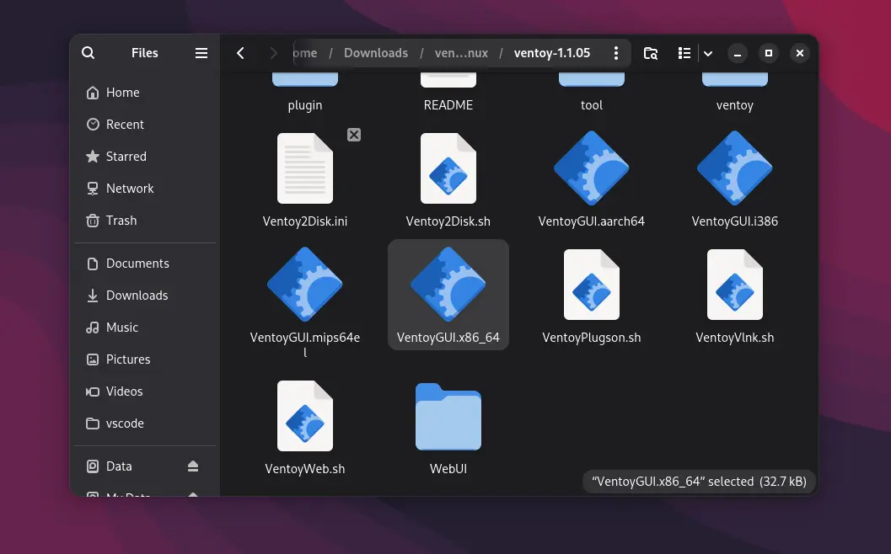
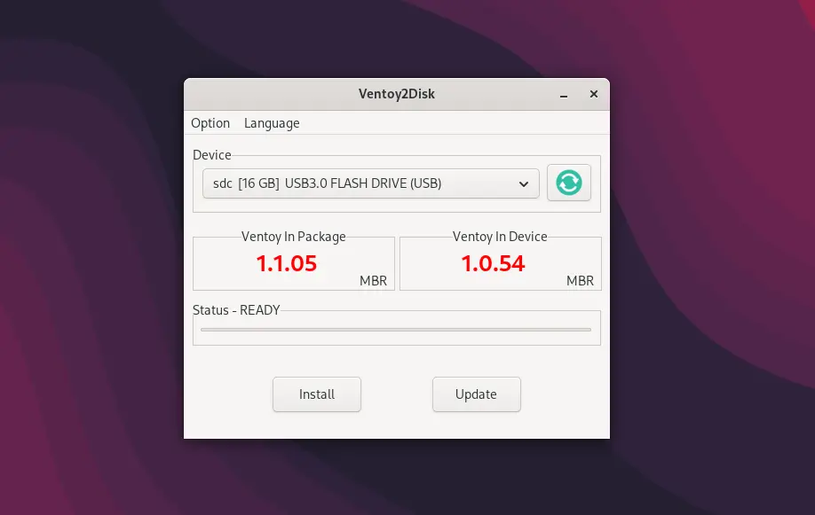

KhangTnm's WinPE takes up 1,5Gb of disk space. To install KhangTnm's WinPE on a USB Drive, you need to have:
You can use a USB 2.0 Drive, but a USB 3.0 Drive is highly recommended.
First, go to KhangTnm's WinPE homepage to download the iso file.
Next, you need to create a bootable USB Drive by using Ventoy. You can use other USB media creation tools, but we highly recommend you using Ventoy. Download Ventoy from ventoy.net.
Plug in your USB Drive.
After downloading Ventoy, you have to extract the zip file. Then, go into the directory and double-click to the Ventoy2Disk.exe if you're using Windows or VentoyGUI.x86_64 if you're in Linux.
The Ventoy will pop up suddenly. In the 'Device' section, click the dropdown box and select your USB Drive from the list. Please select the CORRECT USB Drive, because all your data inside the USB Drive WILL BE DELETED.
Before clicking 'Install', make sure your USB Drive is EMPTY. All your data on USB Drive WILL BE DELETED.
Click 'Install' to install Ventoy onto your USB Drive. The process shouldn't take too long.
For more information about installing Ventoy, click here.
Once it's finished, you will see the drive named 'Ventoy' in the file explorer. Copy the KhangTnm's WinPE ISO to the Ventoy drive. You can also copy other ISOs to the drive.
Congrats, now you have a bootable KhangTnm's WinPE USB Drive.
Plug the USB Drive to the target PC. Press the BIOS key and turn on the PC to enter BIOS setup. You can Google it to see what key should you press. BIOS key may be different depending on your PC model.
In your BIOS settings, change the boot device to the USB Drive. Then, save the changes and restart your computer. You may need to turn off Sercue Boot in your BIOS if it doesn't boot
Once it's booted into Ventoy, use your arrow keys to navigate to the KhangTnm's WinPE iso, then press enter.
Now you can use KhangTnm's WinPE to rescue a broken Windows system, check hardware, or install Windows.